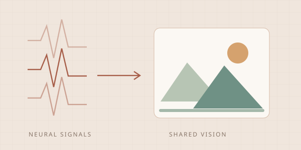
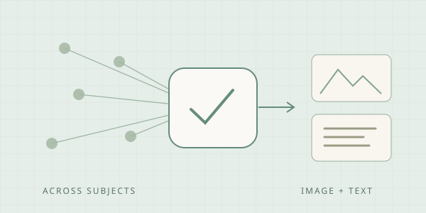
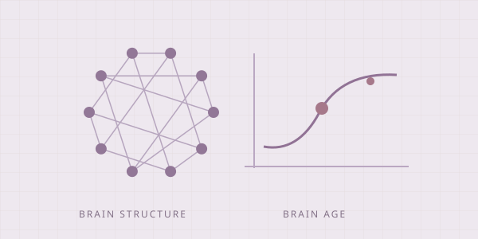

HELLO, AND WELCOME
I’m Jinke.
Jinke Li 李锦科
From brain activity to
shared visual understanding.
I am a master’s student in Computer Science and Technology at Lanzhou University, where I conduct research with Prof. Yu Fu and Prof. Zhijun Yao. I expect to graduate in June 2027.
My research connects fMRI brain decoding, neural representation alignment, and multimodal AI. I build models that map brain responses to visual and linguistic representations, with a focus on generalization across individuals. I also study functional brain networks and clinical neuroimaging.
A FEW THINGS I WORK ON
All research Research highlights brain meets AI

Concept illustrationMedical Image Analysis
MindShow
Reconstructing shared visual experiences across people through subject-aware representation learning and neural-to-visual alignment.
First author · Published
Concept illustrationMICCAI 2026
NeuroAlign
A plug-and-play alignment module for existing fMRI-to-image and fMRI-to-text decoders, designed for transfer across subjects and architectures.
First author · Accepted
Concept illustrationPRCV 2026
Brain age
Anatomy-aware attention across representations for source-domain-invariant brain age estimation.
Co-first author · AcceptedRecent milestones
little steps forward2026
Our brain age estimation paper was accepted to PRCV 2026.
2026
NeuroAlign was accepted to MICCAI 2026.
2026
MindShow was published in Medical Image Analysis.
PAPERS & ONGOING WORK
01 /Research
Learning what is shared across brains — and how to connect it to vision, language, and brain health.
NeuroAlign: A Unified Plug-and-Play Enhancer for Visual and Linguistic Brain Decoding
A plug-and-play alignment module for existing fMRI-to-image and fMRI-to-text decoders, designed for transfer across subjects and architectures.
Source-Domain-Invariant Brain Age Estimation with Anatomy-Aware Cross-Representation Attention
Anatomy-aware attention across representations for source-domain-invariant brain age estimation.
Making Better Captions Follow the Brain: Evidence-Accountable Policy Learning for fMRI-to-Language Decoding
Aligning caption optimization with brain-derived evidence, with evaluation of caption quality and spatial grounding under the BrainHub protocol.
Geometry-Preserving Cross-Tissue sMRI Fusion for Multicenter Diagnosis and Severity Stratification of Major Depressive Disorder
Geometry-preserving fusion of structural MRI tissue representations for multicenter depression diagnosis and severity stratification.
* Equal contribution. Manuscripts under review are listed separately by status.
THE WORK BEHIND THE PAPERS
02 /Research experience
Cross-subject brain decoding
MindShow & NeuroAlign
I develop neural representations that separate individual variability from shared visual semantics, and alignment modules that transfer across fMRI-to-image and fMRI-to-text decoders.
Evidence-accountable language decoding
Brain-derived evidence, grounded captions
I investigate policy learning that ties improvements in generated captions to brain-derived evidence, evaluating caption quality and spatial grounding under the BrainHub protocol.
Clinical fMRI & brain networks
From experimental design to connectome analysis
My work includes task-fMRI paradigms for cognitive reappraisal, dynamic faces, and narrative prediction, as well as AAL116 connectome analysis of resting-state fMRI from 135 adolescents. I examine network topology with FDR-controlled statistics and machine-learning classification.
Education
Lanzhou University
M.S. · Computer Science and Technology
Expected June 2027 · Average: 87.88/100
Lanzhou University
B.Eng. · Computer Science and Technology
Data Science · Average: 88.65/100 · Rank: 6/113
Honors & awards
Meritorious Winner
MCM / ICM
Second Prize · National Finals
7th Global Campus AI Algorithm Elite Competition
Lanzhou University Scholarships
First Class, 2024 · Second Class, 2021–2023
LET’S CONNECTGood research starts
Good research starts
with a conversation.
I welcome conversations about PhD opportunities and collaborations in brain decoding, multimodal neuroimaging, and neural representation learning.
ljinke24@lzu.edu.cn li337062166@gmail.com